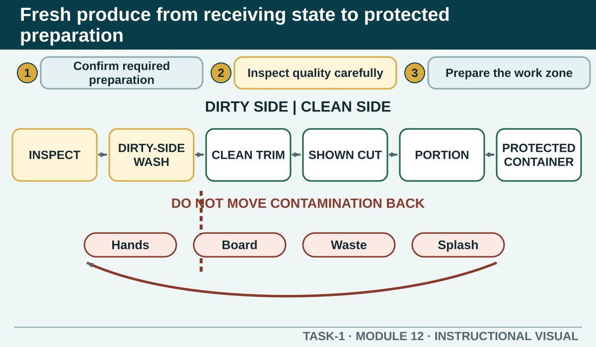

Select, wash, trim, cut, portion and protect fresh produce through a controlled workflow that supports food safety, quality, consistency and waste prevention.
Learning intention
What success looks like
Uses a teacher-nominated ingredient and cut
Separates dirty, clean and finished stages
Links consistency to quality and yield
Does not invent a chemical wash, storage figure or local recipe
Core ideas
Build the complete picture
1
Confirm the produce and required preparation
2
Inspect quality without claiming safety by appearance
3
Prepare hands, sink, equipment and work zone
4
Trim for yield and quality
Visual explanation
Fresh produce from receiving state to protected preparation

A left-to-right path separates Inspect, Dirty-side wash, Clean trim, Demonstrated cut, Portion and Protected ready-to-use container. Arrows for hands, boards, waste and splash show where contamination can move backwards and where controls break it.
Worked example
Inspect quality without claiming safety by appearance
Check produce against the authorised quality and acceptance criteria. Look for identity, freshness, damage, contamination, pests, packaging condition and the amount of usable material. Separate and report items that do not meet the requirement.
Observed evidence: In a fictional produce delivery, one item has visible damage and soil while the surrounding items match the ordered identity. The learner has no verified storage history for the damaged item. Decision and reason: They decide that appearance supports a quality concern but cannot prove whether the item is safe or suitable. Safe action: The learner separates it from accepted produce, avoids tasting or trimming away the uncertainty and reports the observations to the teacher for the authorised acceptance decision. Result: Questionable produce is not mixed into preparation. Next check or record: The learner confirms the accepted items, prepares them only through the demonstrated method and records identity, visible condition, decision and any resulting waste factually.
Question the room
What should determine how fresh produce is cut?
The authorised recipe, final use and demonstrated preparation term.
Whichever shape the worker can make fastest.
The cut used by another group for a different recipe.
Apply
Sandwich production and waste sequence
Brief: prepare four consistent ready-to-eat salad sandwiches using the teacher-authorised recipe. The exact ingredients, quantities and local presentation standard remain in that recipe.
Order all nine stages.
Check the sequence.
Name one waste-prevention decision and one food-safety control that must operate together.
Exit ticket
Action · evidence · next step
Plan the preparation of one teacher-nominated fresh-produce ingredient. Explain selection, washing, trimming, demonstrated cut, contamination controls, usable yield, protection until use and clean-down.
One action I would take
The evidence I would check
The person or source I would confirm with
My next improvement
1 of 8
Speaker notes and delivery prompts
Open with this purpose: Select, wash, trim, cut, portion and protect fresh produce through a controlled workflow that supports food safety, quality, consistency and waste prevention.
Use Confirm the produce and required preparation to connect prior learning to the first observable workplace decision.
Model Inspect quality without claiming safety by appearance by walking through this supplied example: Observed evidence: In a fictional produce delivery, one item has visible damage and soil while the surrounding items match the ordered identity. The learner has no verified storage history for the damaged item. Decision and reason: They decide that appearance supports a quality concern but cannot prove whether the item is safe or suitable. Safe action: The learner separates it from accepted produce, avoids tasting or trimming away the uncertainty and reports the observations to the teacher for the authorised acceptance decision. Result: Questionable produce is not mixed into preparation. Next check or record: The learner confirms the accepted items, prepares them only through the demonstrated method and records identity, visible condition, decision and any resulting waste factually.
Ask: What should determine how fresh produce is cut? Confirm the strongest response as The authorised recipe, final use and demonstrated preparation term..
Listen for this misconception: Speed does not replace the specified cut or consistent product standard.
Move into Sandwich production and waste sequence, then collect the saved response and finish with the source boundary: Authorised source note: Source basis: authorised Cycle 1 selecting, washing and cutting fresh produce content, supported by the recipe, knife, hygiene and waste sequence. Exact produce, cuts, wash method, storage and product specifications remain Teacher to confirm.